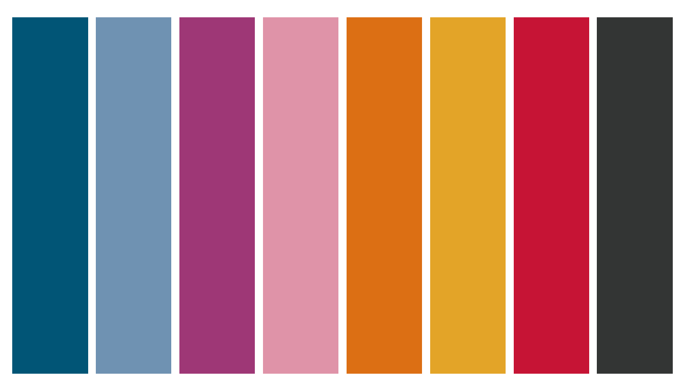
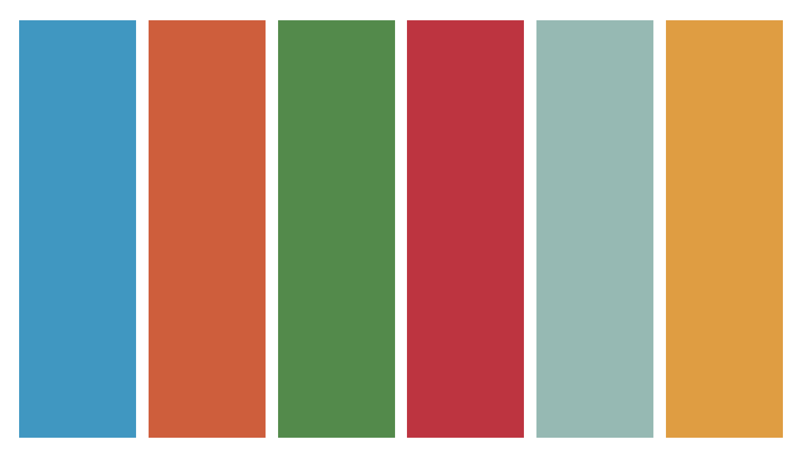
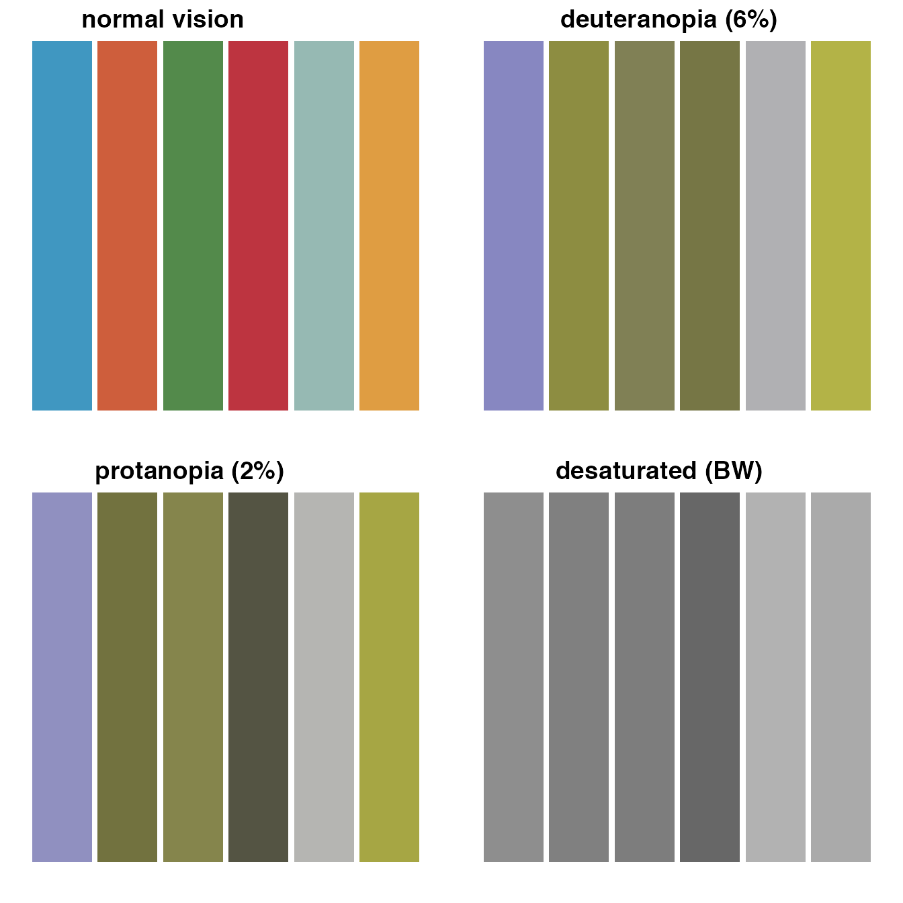

eightdegrees
eightdegrees.RmdInstallation
install.packages("remotes")
remotes::install_github("jebbd/eightdegrees",build_vignettes = TRUE)Munro Series
8 colour paired palette based on the limited edition Munro series 
ggplot(iris,aes(x=Sepal.Width,y=Sepal.Length,colour=Species))+
geom_point(size=2)+
scale_colour_munro()+
theme_minimal()
Core Range
6 colour palette based on the core range from 8 degrees brewing

ggplot(iris,aes(x=Species,y=Sepal.Width,fill=Species))+
geom_violin()+
scale_fill_core_range()+
theme_minimal()
Unfortunately these palettes are not colourblind safe
But if you request two colours from either palette the returned pair is a colourblind safe blue and orange.
